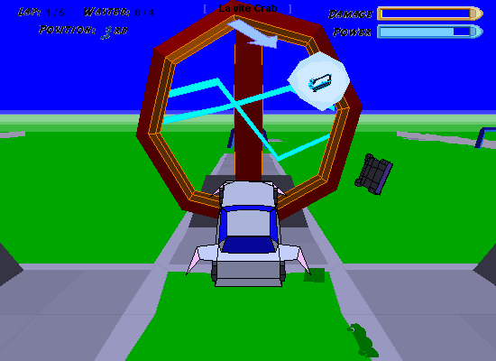
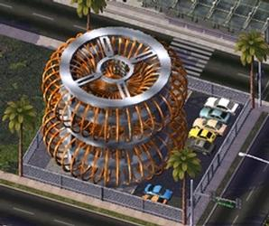

How It Started
Technically, I started modding and making game addon content at a young age in the early 2000s, having unpacked the assets for various games (many of which were stored in simple archive container formats) and editing them to manipulate the game's behavior. This was usually simple "data" edits - part stats for a racing game, for example - but several games allowed for more, including custom levels, scripts, and more. For example, I spent quite some time with an old racing/demolition derby game and editing the data files to create custom tracks and vehicle models (a practice that grew to significant popularity in the following years), spent several years making a plethora of custom cargos and map elements (and a custom expanded map) for several games in the "18 Wheels of Steel" trucking game series, and made a great many custom buildings and behavioral change mods for SimCity 4 in the late 2000s.
  One of the only surviving images of one of my old tracks for that game, and one of my old SC4 buildings.
My "modern" phase of modding started at the end of 2012, in the middle of my university program, and was effectively started by a series of lucky accidents, a story I never tire of retelling. That story can be found in detail on the history page for Minecraft, but in short, it was a lucky accident I found out about MC at all, and several more that led to getting into modding the game. By the spring of 2013, I was making mods far larger in scope and complexity than I ever had before, kickstarting the modding "career" I have been maintaining ever since. Additionally, since these mods were code-based, rather than simple content packs like everything previously, I was both completely unfettered in my designs and getting into programming in a way I never had before.